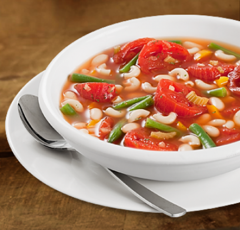
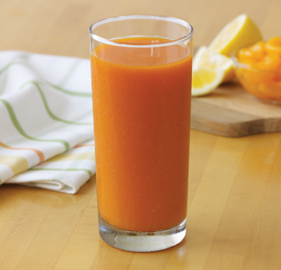

Homemade minestrone soup can be ready in minutes on a chilly day. Just simmer for 10 minutes to cook the macaroni and the soup is done.
Ingredients
1 yellow bell pepper, diced 2 can (14.5oz.each) Del Monte® Original Recipe Stewed Tomatoes, not drained 1 can (14.5oz.) Del Monte® Cut Green Beans, drained 1 can (14.5oz.) College Inn® Chicken Broth 1 can (15oz.) navy beans, rinsed and drained ⅔ cup (2oz.) dry macaroni Salt and black pepper, optional 1 Tbsp. finely chopped fresh parsley, optionaCombine all ingredients in a large saucepan.
Directions
Combine all ingredients in a large saucepan. Bring to a boil over high heat; reduce heat to medium-low. Cover and simmer 10 minutes or until pasta is tender. Season to taste with salt and pepper and sprinkle with parsley, if desired.
Read more at http://www.delmonte.com/recipes/italian/20-minute-minestrone
Refreshing, vibrant mango popsicles are fun and simple to make with just 1, 2 or 3 ingredients. And, they’re ready to freeze in just 5 minutes.
Ingredients
Mango Pops 1: 1 can (15 oz.) Del Monte® Diced Mangos in Light Syrup, not drained
Mango Pops 2: 1 can (15 oz.) Del Monte® Diced Mangos in Light Syrup, not drained; 2/3 cup (6 oz.) low fat vanilla yogurt or Greek Yogurt
Mango Pops 3: 1 can (15 oz.) Del Monte® Diced Mangos in Light Syrup, not drained; 3 Tbsp. fresh lime juice; 6 to 8 fresh mint leaves
Directions
Pour mangos and mango syrup in a blender or food processor. Add yogurt or lime juice and mint, if making Mango Pops 2 or 3. Purée until smooth. Fill popsicle molds; insert popsicle sticks. Freeze at least 4 to 6 hours. To loosen pops from molds, run warm water over outside of mold. Wiggle sticks and gently pull.
TIPS: About 1/3 cup mango purée fills a 3 oz. popsicle mold. Makes five 3-oz. popsicles or three 5-oz. popsicles. Recipe can be doubled.
Read more at http://www.delmonte.com/recipes/dessert/mango-pops-1-2-3
Two-in-one. Get veggies and fruit from canned carrots and Mandarin oranges blended with ginger and lemon in one bright and zesty drink. Best served well chilled.
Ingredients
1 can (8.25oz.) Del Monte® Sliced Carrots, chilled 1 can (15oz.) Del Monte® Mandarin Oranges in Light Syrup, chilled, not drained 1 Tbsp. grated fresh ginger [or grated lemon zest] ¼ cup fresh lemon juice
Directions
Drain carrots in a colander and rinse under cold water, shaking off excess liquid. Combine carrots, oranges, ginger and lemon juice in a blender. Puree until smooth. Serve immediately or refrigerate up to 24 hours.
Read more at http://www.delmonte.com/recipes/sweet-sips/mandarin-carrot-juice